The City as Dreamworld and Catastrophe
I
The events surrounding the historian and in which [s]he takes part will underlie [her] his presentation like a text written in invisible ink. —Walter Benjamin1
The end of the Cold War is the determining moment of this presentation. A certain kind of industrial dreamworld has dissipated, one that dominated the political imagination in both East and West for most of the century. To be sure, in the East the dream-form was a utopia of production, whereas in the West it was a utopia of consumption. But both shared intimately the optimistic vision of a mass society beyond material scarcity, and the collective, social goal, through massive industrial construction, of transforming the natural world. Despite open hostility to many aspects of modernity, fascism, too, shared in this mass utopian dream.
Of course, the differences mattered, as the sufferings and deaths of millions testify. Given the disturbing fact that it is once again politically acceptable to call oneself “fascist,” these differences ought never to be forgotten. But from our own postsocialist, postmodern perspective, the dream-forms of industrial modernity—capitalist, socialist, and fascist—all seem part of an earlier historical era. The Ford Motor Company’s Highland Park factory in Detroit, where assembly-line production originated (the model for Fiat’s Lingotto factory built under Mussolini, and for the AMO-Moscow and Nizhni-Novgorad automobile plants built under Stalin), is closed and in ruins. The rust belts of the United States’ Northeast cannot be distinguished in a material sense from those that blot the landscape in Russia or Poland.
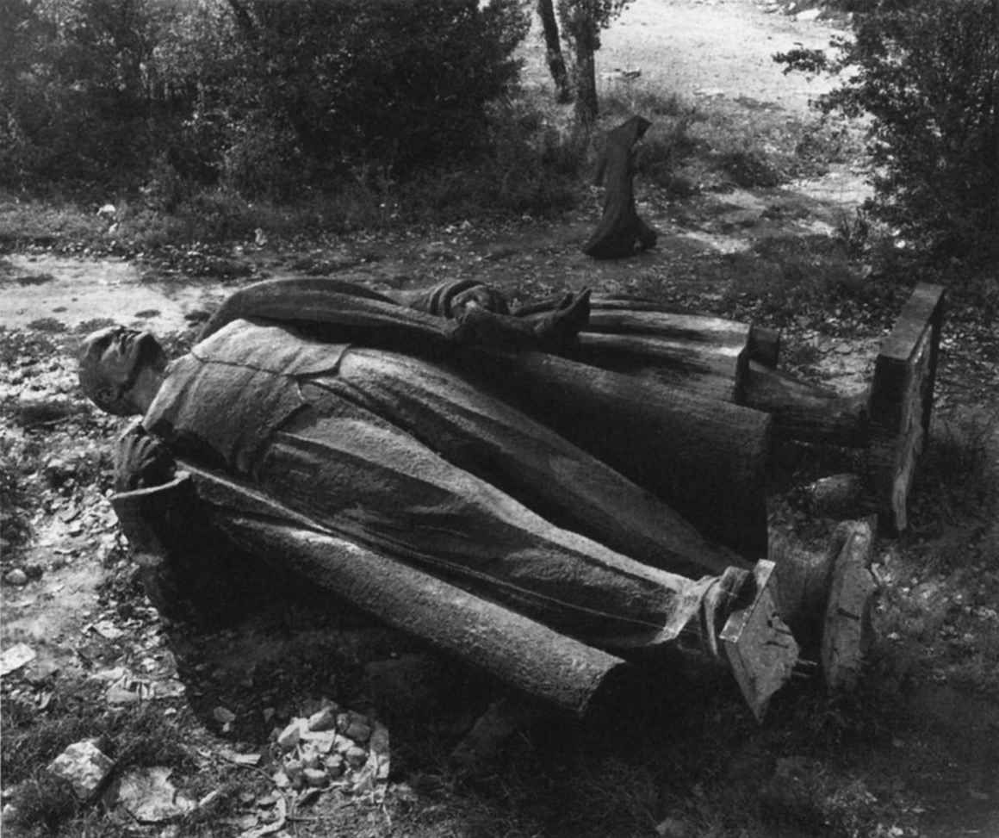
Mark Lewis. On the Monuments of the Republic #2. 1990.
Industrial contamination of water and air has the same chemical composition whether it has been produced under socialism or capitalism. Despite all the political rhetoric that has been invested in arguing that one can differentiate decisively between variants of modern culture—that certain architectural styles are inherently “fascist,” that constructivist principles are intrinsically “progressive,” or that heroic iconography is uniquely “socialist”—these cultural forms have shown themselves remarkably resilient, adaptable to the most diverse social and political purposes. The fact that these forms are used interchangeably by contemporary artists and image-makers implies that one of the casualties of the end of the Cold War is the structure of cultural discourse itself.
To paraphrase Walter Benjamin (who was describing an earlier era), for us at the threshold of the twenty-first century, the out-of-date ruins of the recent past appear as residues of a dreamworld. If his characterization of the turn of the last century is true as well of our own time, this should come as no surprise. The disintegration of cultural forms is endemic to modernity. Its temporality is that of fashion, the relentless production of the new—and therefore, just as relentlessly, the production of the outmoded. Benjamin concluded that a temporal distance comparable to that of the Ice Age had been traversed since the origins of industrial culture. He situated its birth temporally in the 1820s and spatially in the Paris arcades, constructions of iron and glass that emerged anonymously at that time as a new architectural style.
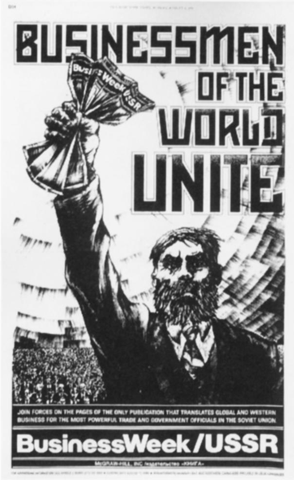
Ad for Business Week. August 1990.
Vitaly Komar and Alexander Melamid. Onward to the Final Victory of Capitalism. 1987.
The arcades (Passagen) provided the central image of what was to have been Benjamin’s major work, published posthumously as the Passagen-Werk, intended as an “Ur-History of the Nineteenth Century” (V, 1118).
The arcades were the earliest, Ur-shopping malls. Benjamin described them as “the original temple of commodity capitalism” (V, 86). Constructed, like a church, in the shape of a cross, so that pedestrians traversing them could cut through a city block in all four directions, these privately owned, “public” spaces were lined with shop windows in which commodities were displayed like icons in niches. The arcades initiated a cult of commodities that gave material expression to the promise of happiness for the urban masses, a social utopia to be delivered by means of the new industrial power. “Arcades—they beamed out onto the Paris of the Second Empire like fairy grottoes” (V, 700). These early “dream-houses of the collective” were consumer playgrounds, tempting passersby with gastronomical delights, drinks that stimulated and intoxicated, instant wealth at the roulette wheel, and, in the first-floor galleries, heavenly transports of sexual pleasure sold by fashionably dressed ladies of the night: “The windows in the upper floor of the arcades are galleries in which angels are nesting; they are called swallows” (V, 614).
During the Second Empire of Napoleon III, the cult of commodities burst out of the narrow confines of the original arcades. Iron and glass architecture exploded into a myriad of dream-house forms: department stores, cafes, train stations, winter-gardens, exhibition halls, sport palaces—wherever the urban crowd congregated. This architecture spread throughout the world, as the first international building style of the industrial era. It was the hallmark of having “arrived” as a modern city. By the century’s close there were glass-covered arcades in Milan, Cleveland, Moscow, Johannesburg, Melbourne, Glasgow, Istanbul, Buenos Aires, as well as Berlin, the city of Benjamin’s childhood. The building style reached its apogee in the World Expositions, the modern “folk festivals” of capitalism (V, 267). In the explosion of these mass-culture forms, the face of the city was transformed. Governments participated by financing urban renewal projects that tore down and rebuilt whole areas of cities. The industrial metropolis became a landscape of techno-aesthetics, a dazzling, crowd-pleasing dreamworld that provided total environments to envelop the crowd. Cosmic proportions, monumental solidarity, and panoramic perspectives were the characteristics of this new urban phantasmagoria. All of its aspects dwarfed the original arcades. The once-magical “fairy grottoes” that had spawned the commodity phantasmagoria went into decline. Their narrowness appeared stifling, their perspectives claustrophobic, their gaslight too dim.
In Benjamin’s time, the arcades were in ruin, an out-of-date architectural form cluttered with commodity discards. Walking into one was a journey into the past. Like an archaeological site, they contained the last century’s fashions in situ: “In the window displays of beauty salons are the last women with long hair. They have rich, undulating hair masses with a ‘permanent wave’—fossilized hair curls” (V, 1048). Benjamin wrote: “[T]oday the Passages lie in the great cities like caves containing fossils of an ur-animal presumed extinct: The consumers from the pre-imperial epoch of capitalism, the last dinosaurs of Europe” (V, 670). But it was exactly the outmoded state of these wish-symbols that attracted him to them. Having lost their dream-power over the collective, they had acquired a historical power to “awaken” it, which meant recognizing “precisely this dream as a dream. It is in this moment that the historian takes upon himself the task of dream interpretation” (V, 580).
Benjamin’s purpose in the Passagen-Werk was political. His goal was not to represent the dream, but to dispel it. Benjamin wanted to present the past history of the collective as Proust had presented his personal one: not “life as it was,” nor even life remembered, but life as it has been “forgotten” (II, 311): “This work is concerned with awakening from the nineteenth century” (V, 580). The Passagen-Werk was a retelling of the story of Sleeping Beauty—in Marxist form. “Capitalism was a natural phenomenon with which a new dream sleep fell over Europe and with it, a reactivation of mythic powers” (V, 494). Under the spell of commodity culture, “the collective consciousness sinks into ever deeper sleep” (V, 492). The transitoriness of fashion washes like the waters of Lethe over the collective which, losing all sense of tradition, forgets its own history. But that history lodges in the discarded and forgotten dream-images, forcing to present consciousness both the dreamed-of potential of the new industrial technologies, and its lack of realization.
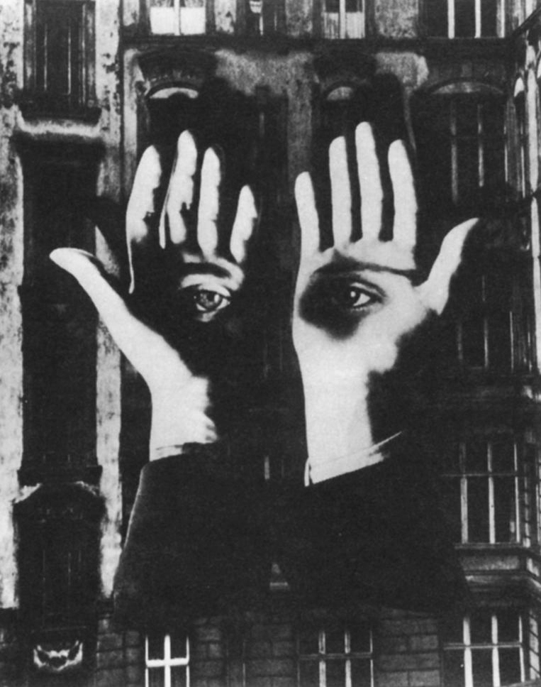
Herbert Bayer. Lonely Metropolitan. 1932.
Benjamin noted in 1938: “Bomber planes make us remember what Leonardo da Vinci expected of the flight of man; he was to have raised himself into the air ‘in order to look for snow on the mountain summits, and then return to scatter it over the city streets shimmering with the heat of summer”’ (V, 609). A materialist history that disenchants the industrial dreamworld of commodities, and yet rescues the utopian desire that it engendered for the purpose of social transformation: this was to have been the goal of Benjamin’s fairy tale.
The way to awaken the dreaming collective was not with a kiss, but with a “box on the ears” (I, 902). It meant exposing the other side of urban life: the nineteenth century as hell. Benjamin documents the loneliness that can befall the big-city dweller in a passage that was clearly autobiographical:
An intoxication overcomes the person who tramps through the city streets for a long time without goal. With every step the going gains in force; the seductions of the stores, the bistros, the smiling women, grow ever narrower; ever more irresistible grows the magnetism of the next street-corner, a distant mass of foliage, a street-name. Then comes the hunger. It will heed nothing of the hundred possibilities of stilling it. Like an ascetic animal he strides through an unknown quarter, until, in the deepest exhaustion, he collapses into his room that, strange to him, lets him in coldly. (V, 525)
This lonely intoxication is dialectically opposed to the self-induced trance of the flâneur, a new city type that had developed a mode of being at home on the city streets, dwelling within them as if in an interior: its cafes are his living room, its park benches his lounge furniture, its street signs his wall decorations.2 The flâneur revels in the crowd. But the blissful state of flânerie is a denial of the other, hellish side of the urban phantasmagoria, the shattering of experience due to the neurologically catastrophic, persistent repetition of shock.
Shock is central to Benjamin’s theory of modernity. It lies behind the techno-aesthetics of the urban phantasmagoria, and exposes it to be a compensatory form. Benjamin refers to Freud’s theory of war neurosis, that consciousness parries shock by preventing it from penetrating deep enough to leave a permanent trace on memory, and claims that this battlefield experience has become the norm in modern life.3 In street crowds and erotic encounters, in amusement parks and gambling casinos, the technologically altered environment of the industrial city exposes the human sensorium to physical shocks that have their correspondence in psychic shock, as Baudelaire’s poetry bore witness. To record the “breakdown” of experience was the “mission” of Baudelaire’s poetry—he “placed the shock experience at the very center of his artistic work”:4 “Baudelaire speaks of a man who plunges into the crowd as into a reservoir of electric energy. Circumscribing the experience of shock, he calls this a “kaleidoscope equipped with consciousness.”5 The motor responses of switching on a light, striking a match, the jolt in the movement of a machine, all have their psychic counterpart in the smile that appears automatically on passersby, like “a mimetic shock absorber,” in order to ward off contact.6
Mimesis as a defensive reflex is the essence of factory labor: “[W]orkers learn to coordinate their own ‘movements to the uniform and unceasing motion of an automaton.’”7 Exploitation is not only economic, but cognitive. The factory system injures every one of the human senses, paralyzing the imagination of the worker. His or her work is “sealed off from experience”; memory is replaced by conditioned response, learning by “drill,” skill by repetition: “practice counts for nothing.”8 Perception becomes experience only when it connects with sense-memories of the past; but for the “protective eye” that wards off impressions, “there is no daydreaming surrender to faraway things.”9 Bombarded with fragmentary impressions, this protective eye sees too much—and registers nothing. Thus the simultaneity of overstimulation and numbness that is characteristic of the new organization of the human sensorium, which now takes the form of anaesthetics.10
Not accidentally, drug addiction becomes a social problem in the nineteenth century, characteristic of modern city life. But with the new phantasmagorical forms, a narcotic is made out of reality itself. The dialectical reversal, whereby aesthetic perception changes from a cognitive mode of being “in touch” with reality into a way of blocking out reality, destroys the human organism’s power to respond politically, even when self-preservation is at stake: someone who is “past experiencing” is “no longer capable of telling .., .proven friend … from mortal enemy.”11
Heaven and hell; phantasmagoria and shock; dreamworld and catastrophe. These polarities circumscribe the field of Benjamin’s images of the modern city and account for their critical, political charge. As dialectical images, they are constructions out of extremes, functioning both as revolutionary inspiration and as political warning. When the appeal of fascism became ever greater in the 1930s, the political urgency of his project did as well. Ultimately, there was not enough time—not for the Arcades project, not for Benjamin himself. He fled Paris only weeks before Hitler entered the city in June 1940. When he was stopped at the Spanish border on September 26 and not allowed to continue, he took his own life. The massive assembly of notes for the project was first published (as the Passagen-Werk) in 1982. These fragments, for us, provide the captions to a different kind of ruin. They evoke a nostalgia, not for the phantasmagoric forms of industrial utopia, but for the belief that such a utopia is possible at all.
II
“Jugendstil,” wrote Benjamin, “is the dream that one is awake” (V, 496): When we are traveling and have to wake up early, it sometimes happens that, reluctant to wrest ourselves from sleep, we dream that we arise and get dressed. Just such a dream was dreamt by the bourgeoisie in ugendstil, fifteen years before history awakened that class with a roar. (V, 684)
Jugendstil, Art Nouveau, Arte Nuovo, Austrian Secession, Wagner-Schule, Lo Stile Liberty—all are variants of an international avant-garde that ushered in the twentieth century with the call for a revolution in style. The new century just making its debut needed its own fashion, and these artists and architects were committed to providing it. Far more than a transformation within the arts, this was to be a transformation of art, which, through decoration and design, was to leave the cultural preserve of the museum and enter into every part of daily life.
According to the new ethos of l’art dans tous, the environments and objects of daily use were called upon to provide a new, modern sensibility, a radical change in the public taste.
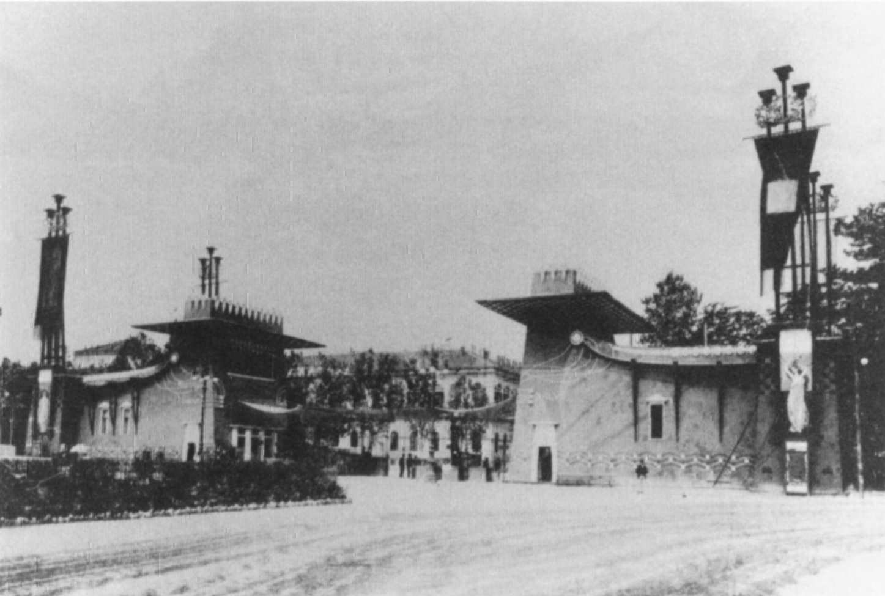
Raimondo D’Aronco. Entrance pavilions, First International Exposition of Modern Decorative Art. 1902.
Furniture and interior decors, wallpaper and textile designs, flower vases and coffeepots, architectural facades and wall posters—these were the new, revolutionary weapons of an artistic avant-garde that equated a transformation in “taste” with a transformation of society itself. “L’arte della vita sociale” was christened by Giovanni Beltrami “Socialismo della Bellezza.”
Italy seized this moment to publicize its arrival as an industrial power, and to promote its own designers and architects by initiating the first International Exposition of Modern Decorative Art, which opened in Turin in 1902. The Circolo Artistico di Torino announced that neither “mere imitations of past styles nor industrial products not inspired by an artistic sense” would be admitted to the exposition, but only “original products that show a decisive tendency toward the aesthetic renewal of form.”12 The entrance pavilion to the Turin exposition was built by Raimondo D’Aronco, who was awarded first prize for his designs. Uncannily similar to postmodern pastiche at the end of the century, D’Aronco’s “new” architecture at the century’s beginning equated originality with ahistoricity and an eclectic blending of disparate cultural sources. The pylons of D’Aronco’s entrance pavilion were described as “Egyptian” in character, while its projecting roof was “Japanese.” Alfredo Melani considered the “brilliant coloring” of the entrance “heartily Oriental” (D’Aronco was working at the time in Turkey as Chief Architect to the Sultan).
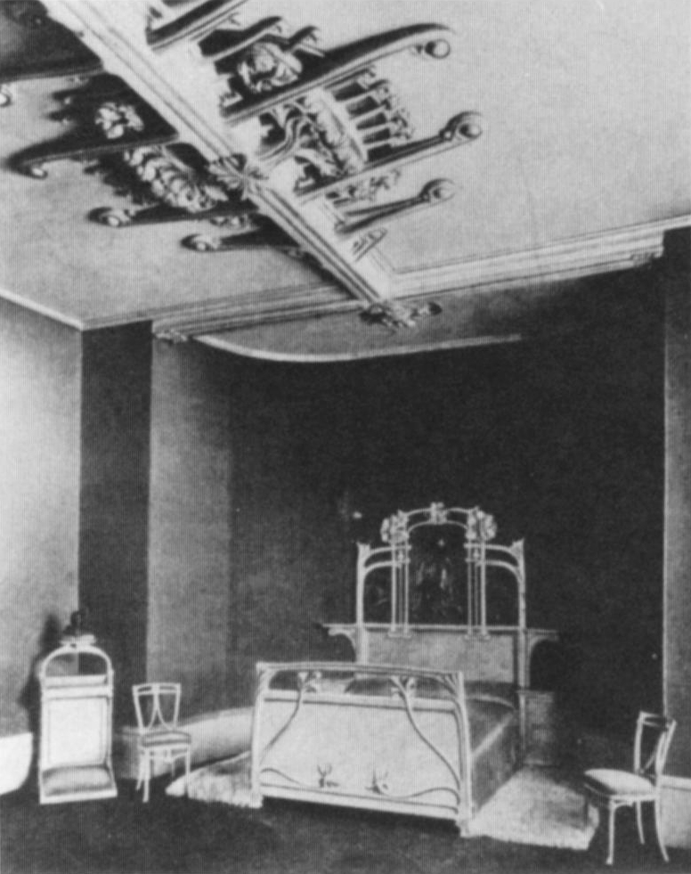
Vittorio Ducrot. Bedroom at the Turin exposition. 1902.
Assyro-Babylonian influences were also detected.13 But D’Aronco’s immediate inspiration was the entrance pavilion built by the Austrian Josef Olbrich for a Darmstadt Exhibition in 1901. It is significant that despite the rhetoric of internationalism, the countries participating at Turin were almost exclusively the imperial powers of Europe (the aspiring imperialist powers of Japan and the United States were exceptions).
In the nineteenth century, Oriental exoticism meant bringing the trophies of empire home, arranging the world-in-miniature as an installation within bourgeois interiors: leopard skins, ostrich feathers, Persian carpets, Chinese vases, Japanese silks. In the new century, Orientalism meant the appropriation of exotic design motifs (discovered in the new photographic journals of archaeology and anthropology) 14 and their integration as an abstract, ornamental surface—a kind of cosmopolitan gloss that covered over the realities of imperial domination with a dream-form of cultural internationalism.
D’Aronco’s pavilions announced that Italy had entered the new sensibility of imperial Europe and was competitive with those nations “advanced” in the design of aesthetic objects and their commercial manufacture, even as the content and form of the new style was a nostalgic return to nature: the curved line, the organic and vegetative forms of stile floreale.
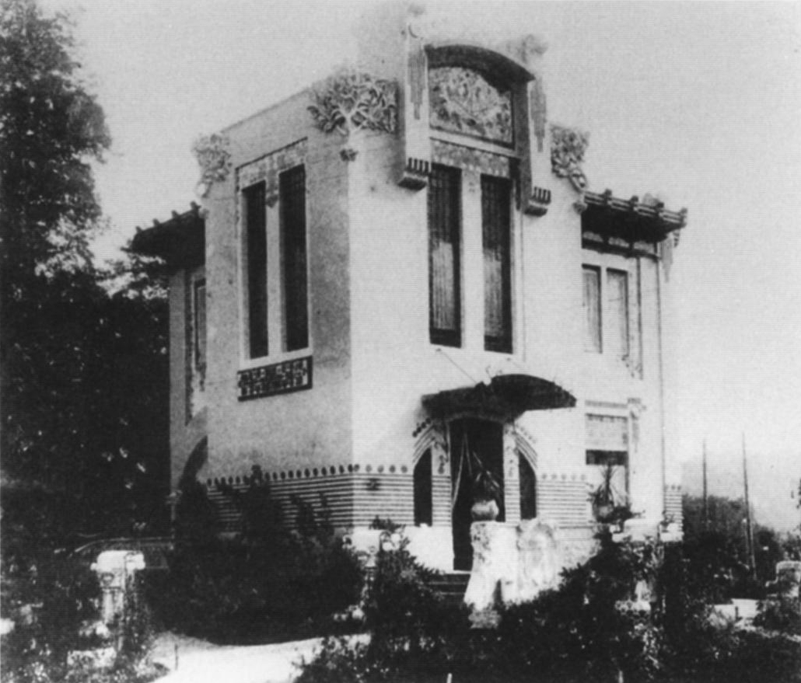
Agostino Lauro. Palazzina Lauro. 1902.
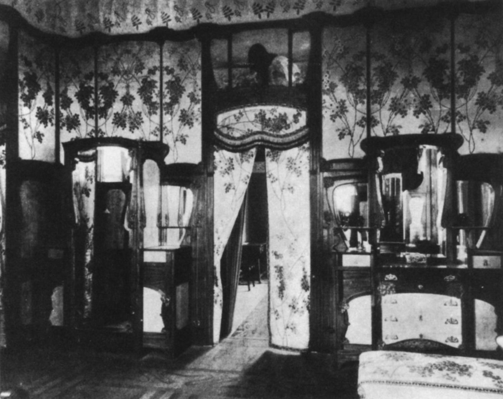
Salon of the Palazzina Lauro. 1902.
A contemporary wrote: “The return to the treasures of natural forms has been universally recognized as the cardinal principle for the renovation of the decorative arts.”15 And yet, as ornamentation and surface design, these “natural forms” underwent a process of abstraction and compression that bore the stamp of precisely that big-city industrialism which its totally designed environments seemed to want to hold at bay. In the Turin exposition, the unity of style was meant to continue harmoniously and seamlessly into the commodity displays—not the usual assembly of isolated objects, but “organic” ensembles, “a series of decorative complexes of complete interiors, responsive to the true needs of our existence.”16 Complete installations were displayed at the Turin exposition by Henry van de Velde (Belgium), Peter Behrens (Germany), Josef Olbrich (Austria), and Mackintosh and MacDonald (Scotland), and although the entire constellation of exhibits affirmed a “universal” stylistic transformation, commercial competitiveness encouraged national differences for product-identification within the international market.
The organizers aspired to exhibitions that would provide “prototypes of complete decors adapted to all homes and all incomes and especially for the most humble so as to promote a real, effective, and complete renovation” of the setting for daily life.17 The theory of “complete renovation” was both romantic, evoking the Wagnerian vision of the Gesamtkunstwerk, and “scientific,” based on the behavioralist premise that new social environments would create new inhabitants. The total ambience was to provide visual indoctrination, educating the public taste as “aristocratic art in a democratic society.”18 In practice, however, production techniques combined the use of sophisticated industrial machinery with small-shop artisanal craftsmanship, which limited the market to a luxury-consuming elite. Despite the democratic rhetoric, these interiors were commissioned exclusively by the wealthy, and their social effect was to isolate this class. The urban realities of tenement houses and working-class poverty were shut out from the private worlds of these design-coordinated interiors. At the Turin exposition, the “Palazzina Lauro,” a collective effort of numerous firms under the direction of the Italian entrepreneur Agostino Lauro, was a major commercial venture to attract customers among the well-to-do. The windows were colored glass in elaborate floral and vegetative designs, blending interior and exterior into a decorative whole.
Bedrooms—the true “dream-rooms” of the bourgeoisie—were a favorite site for coordinated interior decors. Such phantasmagoric interiors, wrote Benjamin, “appeared to have us locked up hopelessly. Then came the film and burst this prison-world asunder by the dynamite of the tenth of a second, so that now, in the midst of its far-flung ruins, we calmly and adventurously go traveling.”19 It was World War I that disrupted the Jugendstil “dream that one is awake,” erupting “with a roar” in 1914. Benjamin wrote: “A generation that had gone to school on a horse-drawn streetcar now stood under the open sky in a countryside in which nothing remained unchanged but the clouds, and beneath these clouds, a field of force of destructive torrents and explosions, was the tiny, fragile human body.”20
III
Benjamin understood the October Revolution of 1917 in terms of this trauma of wartime destruction, as the “first attempt of mankind to bring the new body [of technology] under control.”21 His exposure and conversion to what he called a “radical Communism” was the result of his love relationship with Asja Lacis, a Latvian actress and stage director who worked with Brecht (and whom he met in Capri in 1924). The cultural avant-garde of which Lacis was a part seemed to him to differ decisively from Jugendstil’s dream-form of revolution. Eschewing escapist phantasmagorias, revolutionary art confronted the shock of modern experience directly and, taking its lead from film montage, it made out of fragmentation a constructive principle. Rather than retreating to private environments ornamented with designs inspired by the natural world of flowers and organic life, it affirmed industrial technology as the new “nature,” and placed itself, like a corps of engineers or laboratory scientists, at the service of social transformation. This avant-garde viewed culture not as a compensation for industrialization, but as its actualization.
Of course, the revolutionary avant-garde was not a complete break with the past. Already, before the war, Adolf Loos had vilified the ornamentation of Jugendstil, calling it “excrement,” and insisting that breaking oneself of this habit was as necessary as toilet training. Already artists and painters had glorified the machine and developed an aesthetics of industrial power, and futurist visionaries like Antonio Sant’Elia were proposing designs for urban utopias. But in the context of the 1917 Revolution, these practices were transformed from an artistic “style” into a political program. Alexander Rodchenko wrote in 1921: “All new approaches to art arise from technology and engineering and move toward organization and construction.”22
Alexander Rodchenko. Film poster for Dziga Vertov, Kino-Eye. 1924.
Moreover, the avant-garde could now imagine a new client of art, the working class, and this changed the whole conception of aesthetic design. Vladimir Tatlin’s proposal for a Monument to the Third International, first shown in Leningrad and Moscow in 1920, became the icon of the new revolutionary style when it was displayed at the Paris “Exposition internationale des arts decoratifs et industriels modernes.” Intended, in its ultimate realization, to be one-third higher than the Eiffel Tower, it displayed the “revolutionary” principles of structural transparency and mechanical forms, adapted to “utilitarian intentions.” To be built (like the Paris arcades!) out of iron and glass, its three transparent volumes, rotating at different speeds (one completing its revolution in a year, the second in a month, the third in a day), were to house the various offices of the Comintern, while the tower acted as a transmitting station for revolutionary propaganda. Evoking the industrial forms of an oil derrick, or construction crane, or mining shaft, it was a machine for the generation of world revolution-a working monument, commemorating the future rather than the past. Mayakovski called it “the first monument without a beard.”
Russian Constructivism (of which Tatlin claimed to be the founder), along with Suprematism, Productivism, and other Bolshevik avant-garde movements, resonated with and reacted against other pre- and postwar movements in the West-the German Bauhaus, Italian Futurism, and Le Corbusier’s modernism. Whereas, for example, Le Corbusier proclaimed that a revolution in architecture could substitute for social revolution, the Bolshevik artists deployed themselves in an image-realm engendered by the Revolution.
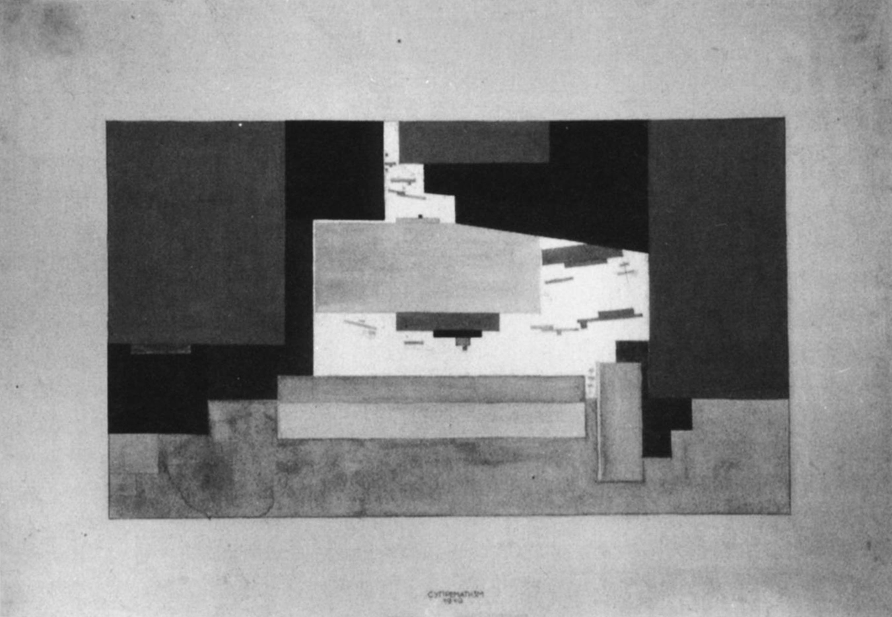
El Lissitzky and Kazimir Malevich. Study for curtains for the meeting room of the Committee to Abolish Unemployment. 1919.
The Suprematists recruited even abstract, geometric forms in the service of the Revolution, as in the famous civil war poster of Lissitzky, Beat the Whites with the Red Wedge (1920). Working with Malevich, Lissitzky developed more obscure connections between form and content, as in their study for curtains for the meeting room of the Committee to Abolish Unemployment. Less well-known among the projects of the avant-garde than either directly agitational art or the nonrepresentational art of pure forms was the shaping of a new consumer culture. Consumption, after all, was the end goal of socialist production. And yet, capitalist consumerism—the culture of commodities—had been denounced, irredeemably, as “bourgeois” (meshchanskii). Rodchenko, in Paris for the 1925 International Exposition (at which his Workers’ Club Interior was displayed), was unsettled by the masses of things displayed for sale in that city, and by the insatiable consumer desire—sensual and sexual—that such abundance provoked.23 Christina Kiaer develops his countertheory of the socialist object: “We must produce and love real things.”24 Rather than being fetishes that ruled over the workers who made them, commodities must become “comrades” in the revolutionary struggle.
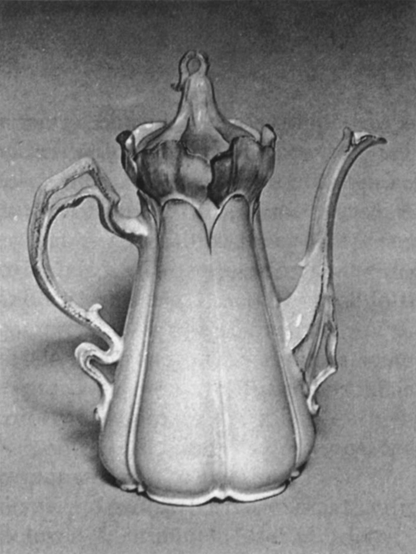
Coffeepot. 1902.
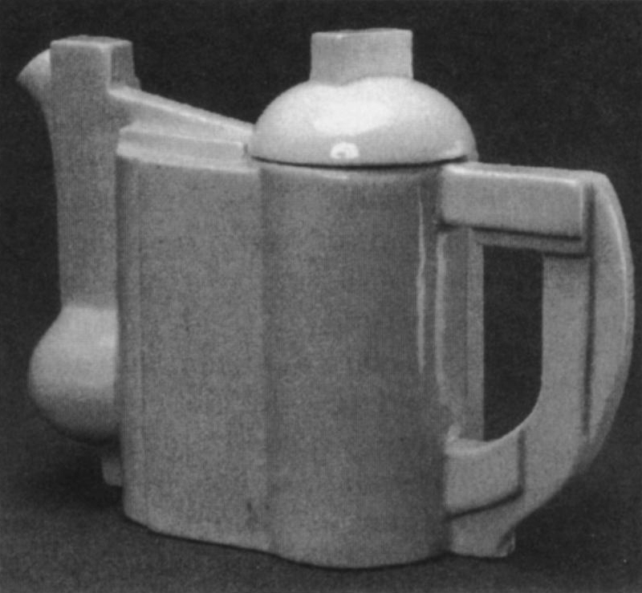
Kazimir Malevich. Teapot. 1923.
Rodchenko condemned the commodification of women in Paris. He saw France as a republic built on women as things.25 In contrast, his theory of the objects as comrades meant treating things as humans, subjective agents that collaborated with the consumer in his or her daily existence. This entailed the introduction of “art” into daily life, precisely the program of Jugendstil, but with a difference: in form and design, the socialist object communicated the new, industrial “nature”—and humanized it. Jugendstil encouraged the consumer fantasy of remaking one’s private, personal environment according to individual whim—as a compensation for the ugliness of the industrial world outside. The effect of socialist design was to bring the industrialized environment inside, where it could be consumed as an object of individual pleasure and domestic use.
The utopian effect of “socialist” objects is their promise to heal the gap between production and consumption. But despite the great energy that the avant-garde devoted to their design, the project for a socialist culture of consumption remained largely unrealized. When Benjamin visited Moscow in late 1926, he noted the “conversion of the revolutionary effort into a technological effort,” which was concerned most pressingly not with cultural change, but with “electrification, canal construction, the building of factories.”26
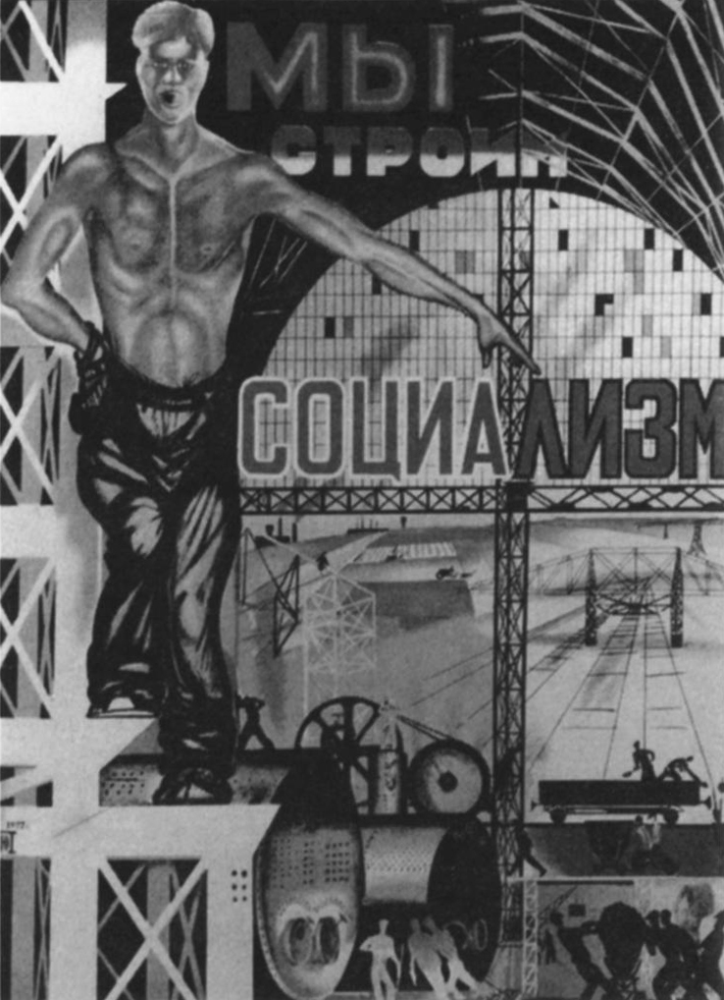
Iurii Pimenov. We Are Building Socialism. 1927.
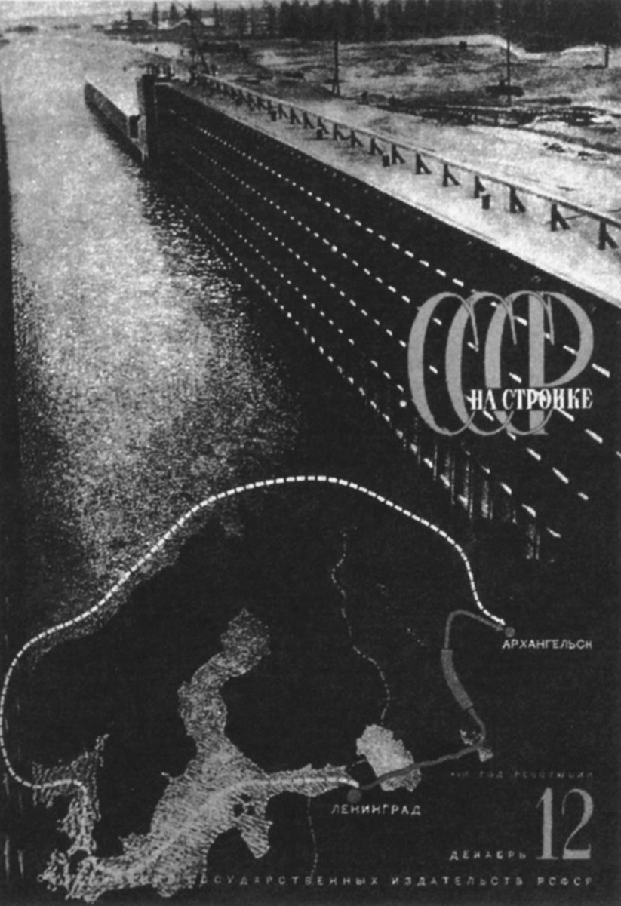
Alexander Rodchenko. Cover for the magazine SSSR na Stroike (USSR in Construction). 1933.
The production culture overwhelmed the consumption culture and, by the 1930s, submerged it almost totally. The phantasmagoria of limitless production took on qualities every bit as disturbing as the phantasmagoria of limitless consumption that horrified Rodchenko in Paris. The Herculean task of the socialist collective was to rebuild the world—change the course of rivers, electrify the country, transform peasants into proletarians, and create whole new cities. The reality behind this production-fantasy was state coercion: forced labor built the White Sea Canal, glorified in Rodchenko’s 1933 photographs (and tens of thousands died); forced labor collectivized Soviet agriculture, heroized in Vertov’s 1931 film Three Songs of Lenin (and millions perished).
IV
It could be said that the Soviet phantasmagorias of production generated a new “dream-sleep,” this time falling over the Revolution itself. Benjamin, although reluctant to attack the Comintern or the Party outright, was aware at least by the mid-thirties that the “Communism” he was defending was not practiced in Stalin’s Russia. He criticized generally “the illusion that factory work, which was a characteristic of technical progress, was itself a political accomplishment … [bypassing] the question of how … [the factory’s] products were to benefit the workers.”27 He did not believe that certain artistic styles were in themselves inherently progressive. The often-cited closing line of his 1936 essay, “The Work of Art in the Age of Its Technical Reproduction”—that “Communism responds” to “the situation of politics which Fascism is rendering aesthetic” by “politicizing art”—attempts to make a clear distinction between these political terms.28 Yet the tragedy is that when art abandons its “bourgeois” autonomy and positions itself in the service of political revolution, it is in constant danger of turning into its opposite: by glorifying power, whatever its persuasion, “political” art aestheticizes politics. And, in fact, in the 1930s, aesthetic forms, produced with the most varied political intents, met and mingled so persistently that they can provide no coherent, allegorical terms for telling the story of historical events. The connections between Italian Futurism and Russian Constructivism (via Russian Futurism) were personal, if not programmatic. The similarities between Nazi art and Socialist Realism have been repeatedly noted, ever since their national pavilions confronted each other at the 1936 Paris World’s Fair. The Casa del Fascio was a “house of glass,” no less “transparent” than Tatlin’s Monument to the Third International. Its glass-and-concrete construction was in an international style that had been used by Moisei Ginsburg in the mid-twenties for a Moscow apartment, and perfected by Le Corbusier in the Villa Savoye.
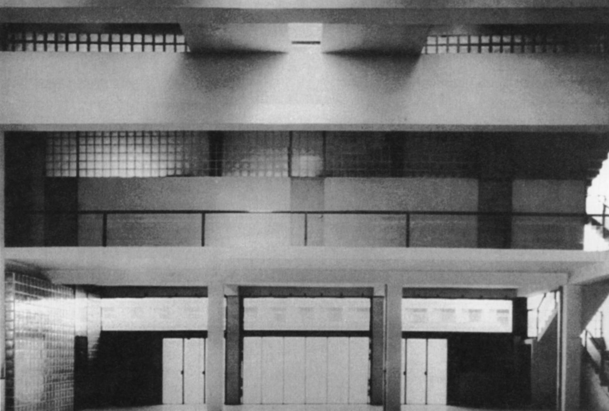
Guiseppe Terragni. Casa del Fascio. Como. 1933-36.
(Le Corbusier felt no irony in saying that the Villa Savoye was a model cell for living spaces for the masses.)
But perhaps most extraordinary (and least commented upon) is the fact that the hallmark of Stalinist urban architecture, the high-rise tower with massive base that has since been named “Stalin Gothic,” bears a remarkable stylistic affinity to a building that symbolizes the very antithesis of a workers’ state, the legendarily luxurious Waldorf-Astoria Hotel built in New York in 1931. Under Stalin, not only hotels but government buildings and the Moscow University were built in this style (the central spire of which, purported to be uniquely Russian, echoes the form of the Empire State Building). Of course, the differences in context and use were crucial when these buildings were constructed, demonstrating (contrary to behavioralist claims of both Jugendstil and Bolshevism) that the built environment’s ability to determine social life has limits. The stylistic similarities across political regimes that can be discerned within the same historical epoch should not lead us to conflate the realities of the regimes themselves. Such similarities had a great deal to do with what was technologically possible at the time—and with the fact that these regimes, knowing very well what the others were doing, were competing internationally for the loyalty of the masses by demonstrating their capacity to construct advanced industrial forms. The projects of mass housing, mass transit, and mass production, as technical problems, could be understood in similar terms, but each regime’s insistence on the distinctiveness of its own solutions was crucial for its political legitimation. Moreover, even the formal similarities were far from total.
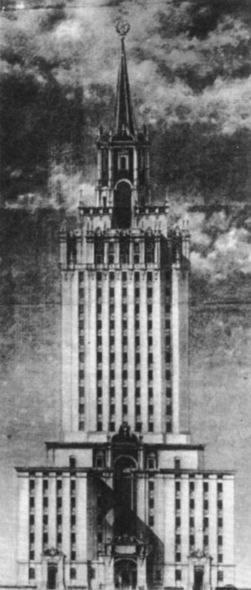
Andrei Boretsky, L. Polyakov. Leningrad Hotel. Moscow. 1948.
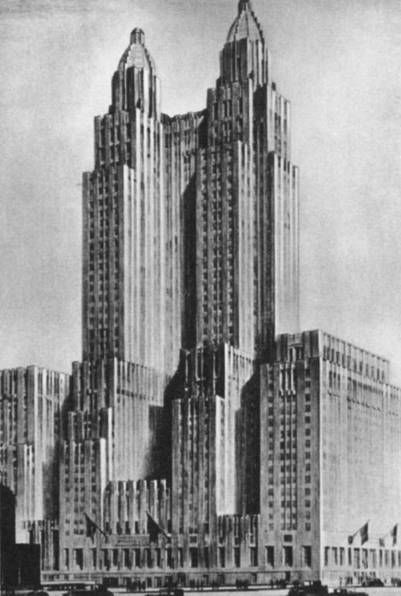
Shultze and Weaver. Waldorf-Astoria. 1931.
The structures built in the style of “Stalin Gothic” were more squanderous of city space than skyscraper buildings in capitalist cities. The Waldorf-Astoria and the Leningrad Hotel implied incompatible public spheres. The former, as a commercial space, was private property, yet accessible to anyone who could pay the price of entry. In Moscow, public space meant state ownership, but access to most buildings was restricted-to members of a particular union, or profession, or party elite. Nor should the temporal epochs be conflated: the call of “art into life” had very different implications in Italy in 1902, after the October Revolution in 1917, and (as the fate of avant-garde artists made clear) in the Soviet Union during the 1930s. All of these complexities—and more—would be needed in order to construct a grand narrative ‘of the relation between art and society in the twentieth century. But it is not my purpose to provide one. Rather, it is to suggest that, given the “fall” of a certain kind of socialism, given the persistence of the attractions of fascism, given the ubiquity of the capitalist economic order, such a story, if told today, can have no unambiguous moral ending.
It is plausible to argue that the fate of the twentieth-century avant-garde “proves” that art is impotent politically, dependent on power, of whatever sort, and vulnerable to appropriation by the status quo. It is equally plausible to claim that twentieth-century art and architecture has had its own history, undergoing a transnational, indeed global development, impervious to political boundaries and independent of political events. But to be true to Benjamin, who rejected all approaches to the history of art as a separate discourse, our story should be one of politics, not art. Its construction would mean ripping pieces of the past out of traditional narratives “with a seemingly brutal grasp” in order to salvage them from the debris of the cultural meaning-systems of this century. It would mean bringing these pieces together, not in a linear narrative, but in constellations that set the political tendencies of the present into question. So let me suggest a concluding version of that story, which will bring us back to the city, dreamworld and catastrophe.
V
Definition of fundamental historical concepts: Catastrophe—to have missed the opportunity; the Critical Moment—the status quo threatens to persist; Progress—the first revolutionary steps. —Walter Benjamin (V, 593)
In the 1930s Stalin initiated the building of the Moscow metro, a remarkable technological achievement that was also an immense iconography of power. Connecting every neighborhood of this city, cool in the summer and warm in the winter, deep enough in the earth to shelter the entire urban population in case of an air attack, the Moscow metro system was palatial architecture for the working class. Each station was a total environment, combining architecture, mosaics, and sculpture, thematically designed and aesthetically executed to depict a theme: the Ploschad Revolutsii, with its sculpted reliefs of revolutionary bravery; the grand Prospekt Mira, with its bas-reliefs of agricultural scenes; the “art deco” Stantsia Mayakovski, with its ceiling mosaics of sky and clouds, flying machines and flying men; and the sumptuous, czar-like ornamentation of Stantsia Komsomolskaya, with its mosaics of past national heroes. This was, indeed, interior decoration for the masses. And if you ask the residents of Moscow about their childhood experiences of this extraordinary metro, they will tell you that it was a magical place, comparable to a Disney theme park, except that it cost only a few kopecks to enter, and that its multiple phantasmagorias intervened habitually into their daily life—comparable, also, to a cathedral, except that you traversed it in a distracted state, always moving with, through, or against the crowd, on your way to somewhere else. Critics have written that the wonderful world of the Moscow metro was all illusion, belying the failure of socialism above the ground. They have criticized its style as an abdication of the modernist project and a return to pre-revolutionary aesthetics. They have noted that such architectural forms interpellated a mass subject, dismissing the individual as insignificant. No doubt the critics are right. But precisely because these socialist dream houses entered into the utopian fantasy of childhood, they acquired a critical power, as memory, in adults.
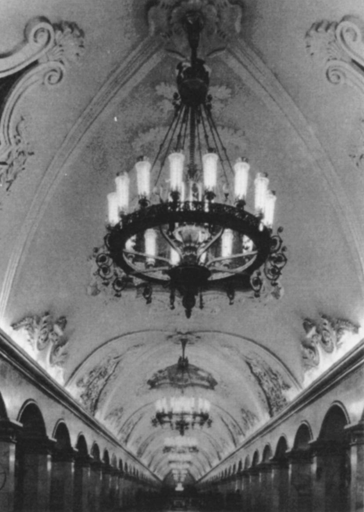
Alexei Shchusev. Komsomolskaya metro station. Moscow. 1952.
The generation of Gorbachev and glasnost grew up in Stalin’s Russia. Komar and Melamid, enfants terribles of the late-Soviet art world, painted a series of parodic images of Stalin that were sacrilegious in the extreme, but also ambivalent, as is their painting of a red banner with the slogan: “Thank You, Comrade Stalin, for Our Happy Childhood.” There is nostalgia as well as derision in this message, nostalgia for a world that was supposed to be.
The glasnost generation of artists turned the aesthetic form of revolution against its content. In a parody of the iconography of the utopia of production, Alexei Sundukov’s painting The Queue uses the diagonal to depict not the working masses as producers of world history, but the waiting masses as consumers, faceless, passive, enduring history as empty time. The gap between the utopian promise, believed in by children, and the dystopian actuality, which they experience as adults, can indeed generate a force for collective awakening. This is the moment of disenchantment-of recognizing the dream as dream. But a political awakening demands more. It requires the “rescue” of the collective desires to which the socialist dream gave expression before they sink into the unconscious as forgotten. This rescue is the task of the dream’s interpretation.
VI
The collective image of the city as a utopian space was shaken fundamentally in World War II by the catastrophic air attacks that so many cities endured.
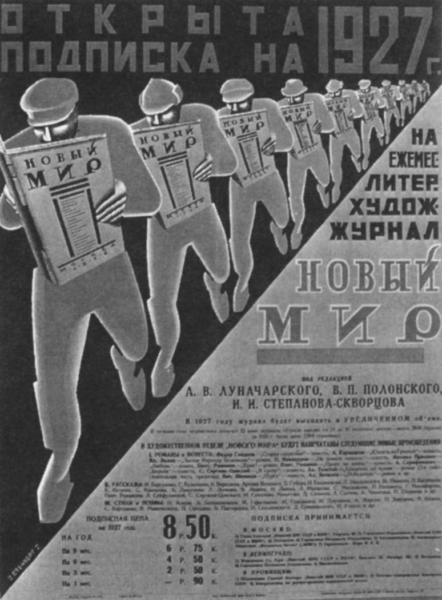
Poster for Novii Mir (New World). 1927.
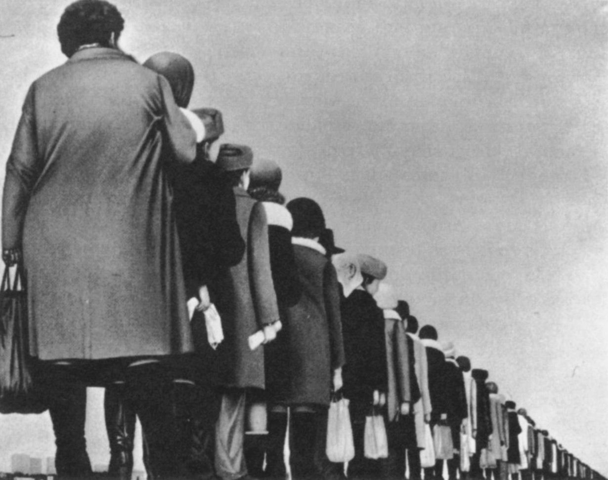
Alexei Sundukov. The Queue. 1986.
To be sure, cities worldwide have continued to attract immigrants to them in ever-greater numbers, drawn by the promise of work and by dreams of consumption. But a countertrend is increasingly apparent: dreams are divorcing themselves from the space of the city. Recent urban planning has been more concerned with security against crime than with staging phantasmagorias for the crowd’s delight. Shopping malls as shrines to consumption have detached themselves from the urban landscape and are capable of relocation anywhere. While the automobile as dream-image is now tarnished by the sobering awareness of ecological realities, the accommodation of this individualist mode of mass transportation was disastrously destructive of urban space.
During the Cold War, when East and West were in competition for the loyalty of the masses, there was a political as well as an economic motivation behind the West’s promotion of consumerist dreams. In the 1950s the “culture of the home” was commodified, and “machines for living” were the capitalist answer to the reconciliation of industry and domestic life. Now that the Cold War is over, it is not clear that the working classes in these countries will continue to be wooed by the carrot of commodity-consumerism. Production for export is the blueprint for the success of capitalist firms, threatening to make obsolete the Fordist principle of putting dollars into the workers’ pockets in order to increase domestic demand. In Jeff Koons’s New Hoovers (1981-86), objects of the “good life” have already become a museum piece. In reaction to the workers strikes of the late 1960s, Fiat introduced robotic production. Twenty-three thousand workers lost their jobs, but Fiat benefited, regaining its position within the world market. For the first time in capitalism’s history, the model for increasing profits is to put people out of work, as “streamlining,” once a term used for automobile styling, has become the motto for corporate reorganization.
Workers themselves are dispensable. And so are the cities in which they dwell. The radical urban political movements of the 1970s failed, not because they were unable to take power in the cities, but because the power that counted was no longer there. The attempt to revitalize the city as a public sphere occurred just when power—economic, political, and cultural—was entering the deterritorialized, global geography of cyberspace. As a structure of power, the connecting grid of urban space is being made obsolete by the “information highways” of electronic communication. Dreams, too, have entered into this electronic space. Children’s fantasy resides there as well. Today’s children are more likely to get lost in a labyrinth of media images than in a labyrinth of city streets. Electronic media provide mass reproduction of the image, not the object. Design counts now more than ever, providing commodities with a national or corporate identity that camouflages the dispersed and global realities of production. As actual cities disintegrate, the image of the city gains in market appeal. Like an echo of the call for social utopia, like a mirage of the existence of collective desire, the city-image enters the domestic landscape.
Postmodern architecture initially was committed to improving cities as a social space. But the economic and political climate was not favorable for urban reform. Rather, a postmodern virtue was made of the accidental way that cities evolve, justifying the lack of any urban policy whatsoever. Style has become eclectic, a melange of neo-, post-, and retroforms that deny responsibility for present history. They reproduce the dream-image, but reject the dream. In this cynical time of the “end of history,” adults know better than to believe in social utopias of any kind—those of production or consumption. Utopian fantasy is quarantined, contained within the boundaries of theme parks and tourist preserves, like some ecologically threatened but nonetheless dangerous zoo animal. When it is allowed expression at all, it takes on the look of children’s toys—even in the case of sophisticated objects—as if to prove that utopias of social space can no longer be taken seriously; they are commercial ventures, nothing more. Benjamin insisted: “We must wake up from the world of our parents” (V, 1048). But what can be demanded of a new generation, if its parents never dream at all?
Walter Benjamin, Gesammelte Schriften, 7 vols., ed. Rolf Tiedemann and Hermann Schweppenhiuser, with the collaboration of Theodor W. Adorno and Gershom Scholem (Frankfurt am Main: Suhrkamp Verlag, 1972-89), vol. 5: Das Passagen-Werk, ed. Rolf Tiedemann (1982), p. 595. Citations from the Gesammelte Schriften are hereafter by volume and page numbers (translations are mine). ↩
Susan Buck-Morss, The Dialectics of Seeing: Walter Benjamin and the Arcades Project (Cambridge: MIT Press, 1989), pp. 304-7. ↩
Walter Benjamin, Illuminations, trans. Harry Zohn (New York: Schocken Books, 1969), pp. 190-93. ↩
Ibid., pp. 162-63. ↩
Ibid., p. 175. ↩
Ibid., p. 176. ↩
Ibid., p. 175. The citation is from Marx. ↩
Ibid., p. 176. ↩
Ibid., p. 191. ↩
See my “Aesthetics and Anaesthetics: Walter Benjamin’s Artwork Essay Reconsidered,” October 62 (Fall 1992), pp. 3-41. ↩
Benjamin, Illuminations, p. 184. ↩
Richard A. Etlin, Modernism in Italian Architecture, 1890-1940 (Cambridge: MIT Press, 1991), p. 29. ↩
Ibid., pp. 39, 58. ↩
The importance of journals and periodicals at this time cannot be overestimated. New methods of photographic reproduction enabled images of exotic cultures, archaeological digs, as well as the most contemporary art and architectural forms to circulate globally. These images isolated the objects from their specific cultural and political contexts, allowing for broad imitation by every nationality of creative artists. They encouraged among art critics and theorists the search for formal similarities between disparate cultural products, often with the goal of suggesting universal forms of human culture. ↩
Cited in Etlin, Modernism in Italian Architecture, p. 33. ↩
Enrico Thovez, cited in Etlin, p. 29. ↩
Ibid., p. 28. ↩
Mario Ceradini, cited in Etlin, p. 29. ↩
Benjamin, Illuminations, p. 236. ↩
Ibid., p. 84. ↩
Walter Benjamin, One-Way Street and Other Writings, trans. EdmundJephcott and Kingsley Shorter (London: NLB, 1979), p. 104. ↩
Cited in The Great Utopia: The Russian and Soviet Avant-Garde, 1915-1932 (New York: Guggenheim Museum, 1992), p. 267. ↩
See Christina Kiaer, “Russian Constructivism and the Practices of Everyday Life,” unpublished paper delivered at the Annual Meeting of the College Art Association, February 17, 1994. Kiaer has done pathbreaking work in this field. Not only does her archival research document the whole discussion among Constructivists of “socialist” consumption. Her theoretical speculations throw new light on the more general problematic of commodity “fetishism” and commodity desire. See her forthcoming dissertation, “The Russian Constructivist ‘Object’ and the Revolutionalizing of Everyday Life, 1921-1932” (University of California at Berkeley, 1995). ↩
Rodchenko, cited and translated in ibid., p. 2. ↩
Ibid., p. 8. ↩
Cited in Buck-Morss, Dialectics of Seeing, p. 29. ↩
Cited in ibid., p. 80. ↩
See my “Aesthetics and Anaesthetics.” ↩